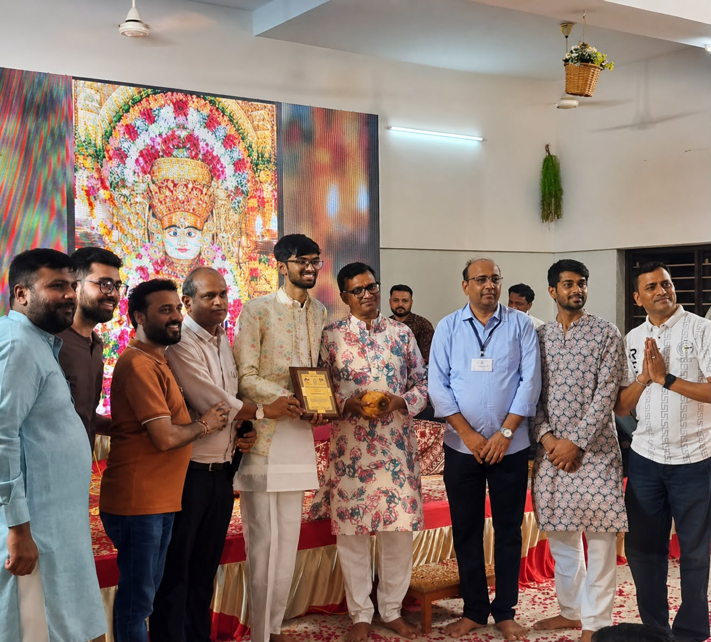
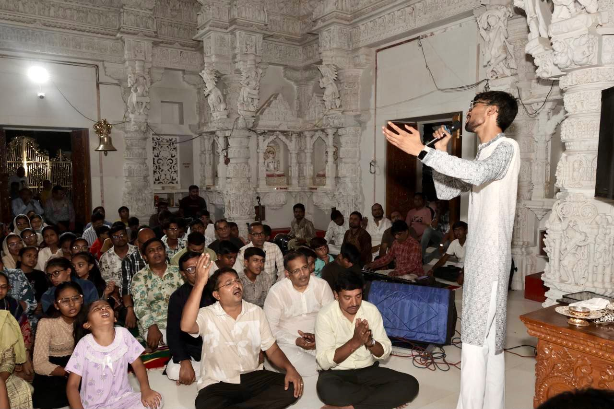
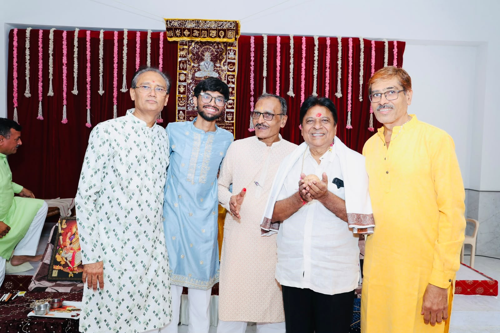

✦ The Artist ✦
A journey of 16 years dedicated to the sacred art of Jain devotional music
With over 16 years of dedicated experience in Jain devotional music, Shrey has devoted his life to the sacred art of Jain singing. From intimate temple ceremonies to grand paryushan celebrations, his soulful voice has graced countless mandirs and events, carrying forward the timeless tradition of Jain devotional music with authenticity and passion.
Trained in traditional Jain puja vidhi and devotional compositions, Shrey brings a rare combination of deep spiritual understanding and musical excellence to every performance. His repertoire spans across stutis, bhajans, stavans, and complete puja singing for all major Jain ceremonies.



✦ The Journey ✦
Started learning Jain devotional music under the guidance of distinguished gurus, discovering the spiritual connection of sacred sounds.
Performed the first solo puja ceremony at a local Jain derasar, marking the beginning of a lifelong dedication to devotional singing.
Recognized for exceptional devotional singing across multiple temples and community events. Began performing Panch Kalyanak ceremonies.
Celebrated 100 successful puja ceremonies, expanding repertoire to include all major Jain puja formats including Sattar Bhed and Shashti Vidhi.
Launched Anahad by Shrey — bringing devotional music to a wider audience through social media and online performances during challenging times.
Crossed 500 events milestone, serving over 50 mandirs across India. Continuing the sacred mission of keeping Jain devotional traditions alive.
✦ Why Anahad ✦
Traditional puja vidhi sung the way it was taught — 500+ ceremonies, 50+ mandirs, and every one of them offered as a seva rather than a performance.
Book a Ceremony